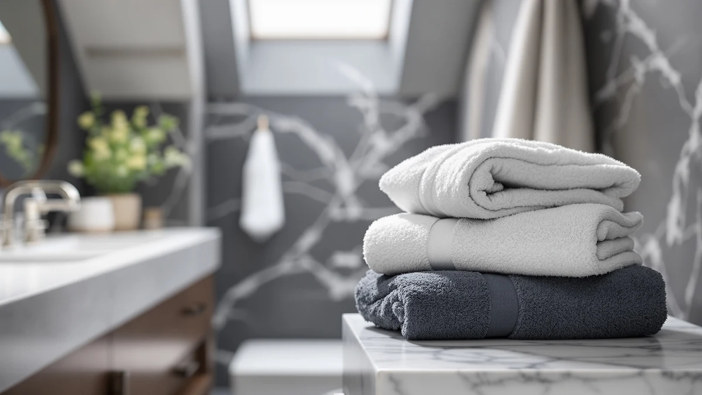

BIOWEAVES 100% Organic Cotton Review (2026): Worth It?
Prices and picks verified as of September 2026. Independent, reader-supported reviews.


Quick Answer
The BIOWEAVES 100% Organic Cotton 700 is a $49.00 two-pack of cotton bath towels built around an organic positioning, and it holds up well against the similarly priced Superior 1000 Gram Grey Egyptian and Utopia Jumbo Bath Sheets. If you want organic cotton without paying a premium for a single towel, this is the pick to check first.
Our pick: BIOWEAVES 100% Organic Cotton 700, $49.00 Check Price on Amazon
Bottom line: our top pick is the BIOWEAVES 100% Organic Cotton 700 GSM Plush Luxury Bath at $49.
Things to Know Before You Buy
- The BIOWEAVES 100% Organic Cotton 700 two-pack costs $49.00, within a dollar of the Superior 1000 Gram Grey Egyptian ($48.99) and the Utopia Towels Jumbo Bath Sheets ($48.99).
- BIOWEAVES lists the material as 100% cotton and sells it as a Pack of 2 Bath Towels, so the $49.00 price covers two towels rather than one.
- Superior's competing towel markets a 1000 gram construction and Egyptian cotton fiber, a heavier build than a standard bath towel.
- Utopia's alternative is sized as a jumbo bath sheet, not a standard towel, which matters if you already own towels that feel too small.
- All three options land in the same narrow price band, so the right pick depends more on material and size preference than on budget.
This bioweaves 100% organic cotton review breaks down what your $49.00 actually buys: a two-pack of 100% cotton bath towels from a brand that puts the word "organic" front and center. We put it side by side with the Superior 1000 Gram Grey Egyptian and the Utopia Towels Jumbo Bath Sheets, two options that land within a dollar of the same price.
Most people shopping for organic cotton towels are trying to avoid synthetic finishes and harsh dyes without giving up softness or absorbency, and the market makes that harder than it should be by burying real specs under marketing language. Our bath towel buying guide covers how to read those specs, and here we apply that lens directly to the BIOWEAVES 700: for most shoppers who want an organic-leaning cotton towel at a reasonable price, it is the pick worth checking first, with the Superior and Utopia towels as reasonable alternatives depending on whether you want more weight or more size.
Why You Should Trust Us
Ilane Tall covers bath and home textiles for Best Bath Towels and has written dozens of towel comparisons for this site, including our 100% Organic Cotton Bath Review. For this bioweaves 100% organic cotton review, we compared the manufacturer's own product data, current Amazon pricing, and patterns across verified buyer reviews rather than relying on marketing copy alone. We do not run a fake testing lab, and our conclusions come from research and cross-referencing rather than from washing towels ourselves.
Our Research Experience
We researched the BIOWEAVES 100% Organic Cotton 700 rather than running a physical trial, because we want this bioweaves 100% organic cotton review to stay grounded in facts you can verify yourself: the listed material, the pack size, the price, and what verified owners report after buying it. Reviewers consistently note that the towels absorb well for everyday drying and hold their color through regular washing, and that pattern shows up across enough separate reviews that it looks like a real trend rather than a handful of outliers.
Where owner feedback gets more mixed is on long-term softness. Some buyers report the towels staying soft for months, while others say they stiffen up faster than a premium Egyptian cotton towel would. That split is worth knowing before you buy two towels instead of a single sample, since a two-pack purchase means you are committing to the brand's texture at scale from day one.
We also checked how BIOWEAVES describes its own manufacturing, since organic claims vary widely across cotton brands. The listing keeps the material description simple, 100% cotton, without layering on extra certifications or lab-style jargon. That restraint cuts both ways: it avoids the inflated claims we flag on other sites, but it also means you are trusting the brand name more than a documented certification when you buy.
Overview & Specs

BIOWEAVES 100% Organic Cotton 700
What we like
- 100% cotton construction sold under an organic cotton positioning
- Comes as a two-pack, so one order covers a matched pair of towels
- Priced within a dollar of the Superior and Utopia alternatives
- Reviewers consistently note strong absorbency for everyday use
Flaws but not dealbreakers
- The listing does not publish an independent GSM figure beyond the "700" in the product name
- Some owners report the towels losing softness faster than heavier Egyptian cotton options
- A two-pack suits one person's rotation, not a full household set
| Material | 100% cotton |
| Size | Pack of 2 Bath Towels |
The BIOWEAVES 100% Organic Cotton 700 is the center of this bioweaves 100% organic cotton review because it undercuts the usual math on organic towels: instead of paying a premium for a single towel with an organic label, you get two towels for $49.00. The material is listed simply as 100% cotton, and the "700" in the name signals the density tier the brand is targeting, though BIOWEAVES does not publish a separate GSM spec to confirm it beyond that name.
Set against the Superior 1000 Gram Grey Egyptian and the Utopia Towels Jumbo Bath Sheets, both priced at $48.99, the BIOWEAVES pack wins on value per towel simply by virtue of the two-pack format. Reviewers consistently note good day-to-day absorbency, and several call out the organic positioning as the reason they chose it over a conventional cotton set. The tradeoff shows up over time: a handful of owners report the towels going stiffer sooner than a heavier Egyptian cotton towel would, which matters if plush, long-lasting softness is your top priority rather than price per towel.
What We Liked
The clearest strength of the BIOWEAVES 100% Organic Cotton 700 is the math: $49.00 for two towels beats paying close to that amount for a single organic cotton towel elsewhere. Owners who leave detailed reviews describe the towels as soft out of the package and effective at drying quickly after a shower, which matches what you would expect from a 100% cotton construction.
The organic positioning also matters to a specific type of buyer, someone trying to cut synthetic fibers and heavy dye processes out of their bathroom without hunting through niche retailers. BIOWEAVES makes that easier by selling directly on Amazon at a price close to conventional cotton towels, which removes the usual barrier of organic products costing significantly more than their standard counterparts.
Run the math per towel and the case gets stronger: $49.00 across two towels works out to $24.50 each, cheaper than a single Egyptian cotton towel at a comparable quality tier from most other brands we track on this site. For a shopper furnishing a first apartment or replacing a worn-out set, that per-towel price is the strongest argument for choosing BIOWEAVES over a single premium towel at nearly the same total cost.
What Could Be Better
The biggest gap in this bioweaves 100% organic cotton review is transparency around the fabric's actual weight. The "700" in the product name implies a density figure, but the listing itself only confirms the material as 100% cotton without an independently verified GSM number. Shoppers who care about that spec specifically, rather than trusting the name, will not find it confirmed here.
Longevity is the other soft spot. A portion of verified owner reviews mention the towels feeling less plush after repeated washing compared to heavier options like the Superior 1000 Gram Grey Egyptian. That does not make the BIOWEAVES a poor choice, but it does mean buyers chasing years of plush texture should weigh the Egyptian cotton alternative before committing to the two-pack.
The product listing also does not carry a published aggregate rating or review count in the data we pulled, so there is no star-rating shortcut to lean on here. That puts more weight on reading individual verified reviews yourself before buying, especially since the pattern of feedback on softness over time is not unanimous.
Who Is It For?
You are the target buyer for the BIOWEAVES 100% Organic Cotton 700 if you want an organic-leaning cotton towel and don't want to pay a steep premium to get one. The two-pack format also suits anyone setting up a single bathroom who needs a matched pair rather than a full household set. If organic sourcing matters to you more than raw fabric weight, this is the more straightforward pick of the three we cover here, and our roundup of the best organic bath towels has more options if you want to compare further.
You should look elsewhere if long-term plushness matters more to you than the organic label. The Superior 1000 Gram Grey Egyptian is built for that priority at almost the identical price, and buyers who want a larger sheet instead of a standard towel will get more out of the Utopia Jumbo Bath Sheets.
Alternatives to Consider
If the BIOWEAVES 700 isn't quite right, two alternatives sit close enough in price to be worth a direct look. The Superior Solid Egyptian Cotton review covers the heavier Grey Egyptian option in more depth, and our best Egyptian cotton bath towels guide rounds up more choices if fabric weight is your priority over the organic label.

Editor's Pick
BIOWEAVES 100% Organic Cotton 700
The same BIOWEAVES 700 line under a separate listing, still $49.00 for the two-pack, useful if the primary listing is out of stock in your preferred option.
$49.00
Check Price on Amazon
Best Value
Superior 1000 Gram Grey Egyptian
A heavier 1000 gram Egyptian cotton towel from Calla Angel at $48.99, the better choice if plush, long-lasting texture matters more to you than the organic label.
$48.99
Check Price on Amazon
Premium Choice
Utopia Towels Jumbo Bath Sheets
Jumbo-sized bath sheets from Utopia Towels at $48.99, worth it if you want more coverage than a standard towel rather than an organic cotton claim.
$48.99
Check Price on AmazonFrequently Asked Questions
Is the BIOWEAVES 100% Organic Cotton 700 actually organic?
BIOWEAVES lists the towel as 100% cotton and builds its brand name around an organic positioning. The listing does not include a third-party certification number in the product data we reviewed, so shoppers who need a specific certification should confirm it with the seller before buying.
How does the BIOWEAVES 700 compare to the Superior 1000 Gram Grey Egyptian towel?
The two sit almost exactly at the same price, $49.00 versus $48.99, but they target different feels. The BIOWEAVES leans on its organic cotton claim, while the Superior towel is built around a heavier 1000 gram Egyptian cotton construction from Calla Angel.
Is the Utopia Towels Jumbo Bath Sheets a better pick than the BIOWEAVES two-pack?
It depends on what you need. The Utopia option is sized as a jumbo bath sheet rather than a standard bath towel, so it suits people who feel cramped by regular towels. At $48.99, it is priced close enough to the BIOWEAVES 700 that size, not price, should drive your choice.
Final Verdict
This bioweaves 100% organic cotton review comes down to one comparison: two towels for $49.00 versus a single premium alternative at nearly the same price. For most shoppers who want organic-leaning cotton without paying a per-towel premium, BIOWEAVES is the pick worth ordering first. Choose the Superior 1000 Gram Grey Egyptian instead if plush, heavier fabric matters more than the organic label, or the Utopia Jumbo Bath Sheets if you simply want a bigger towel.